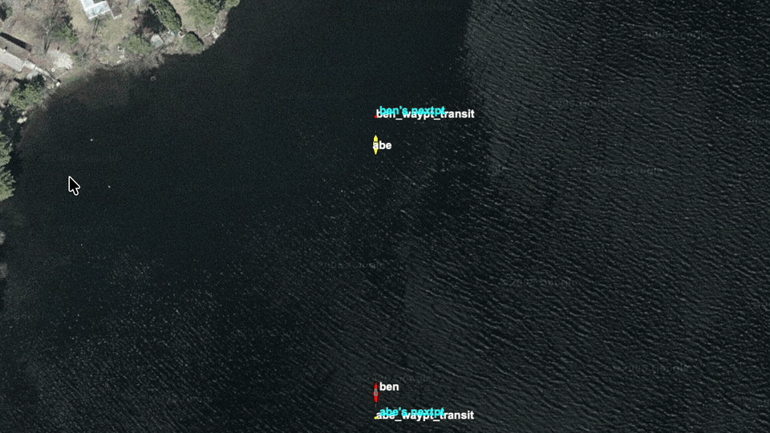
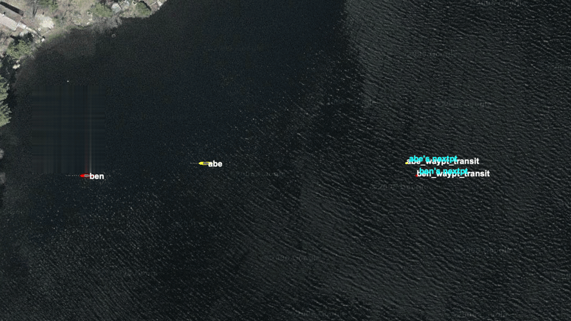

Stem Mission
Baseline scenario context
The shared COLREGS stem mission uses two vessels, ben and abe; ben is the evaluated ownship. Execution cases reuse trusted classification geometry and then judge the maneuver that actually unfolds.
COLREGS
Execution correctness tests for BHV_AvdColregsV22 after classification is known. These cases run encounters through completion and grade the realized maneuver using CPA, side outcome, timing, and collision evidence.
Stem Mission
The shared COLREGS stem mission uses two vessels, ben and abe; ben is the evaluated ownship. Execution cases reuse trusted classification geometry and then judge the maneuver that actually unfolds.
Examples


Case Matrix
head_on_execution_pass
Covers head on execution expected pass.
head_on_cpa_fallback_execution_pass
Covers head on cpa fallback execution expected pass.
head_on_port_offset_execution_pass
Covers head on port offset execution expected pass.
head_on_starboard_offset_execution_pass
Covers head on starboard offset execution expected pass.
crossing_starboard_giveway_execution_pass
Covers crossing starboard giveway execution expected pass.
crossing_starboard_giveway_far_execution_pass
Covers crossing starboard giveway far execution expected pass.
crossing_starboard_giveway_close_execution_pass
Covers crossing starboard giveway close execution expected pass.
crossing_port_standon_execution_pass
Covers crossing port standon execution expected pass.
crossing_port_standon_unsure_bow_execution_pass
Covers crossing port standon unsure bow execution expected pass.
crossing_port_standon_stern_execution_pass
Covers crossing port standon stern execution expected pass.
crossing_port_standon_far_execution_pass
Covers crossing port standon far execution expected pass.
crossing_port_standon_close_execution_pass
Covers crossing port standon close execution expected pass.
crossing_port_standon_close_unsure_bow_execution_pass
Covers crossing port standon close unsure bow execution expected pass.
crossing_port_standon_unsure_execution_pass
Covers crossing port standon unsure execution expected pass.
overtaking_starboard_execution_pass
Covers overtaking starboard execution expected pass.
overtaking_starboard_range_far_execution_pass
Covers overtaking starboard range far execution expected pass.
overtaking_starboard_small_gap_execution_pass
Covers overtaking starboard small gap execution expected pass.
overtaking_starboard_mirror_execution_pass
Covers overtaking starboard mirror execution expected pass.
overtaking_starboard_mirror_range_far_execution_pass
Covers overtaking starboard mirror range far execution expected pass.
overtaking_starboard_mirror_small_gap_execution_pass
Covers overtaking starboard mirror small gap execution expected pass.
overtaking_starboard_mirror_large_gap_execution_pass
Covers overtaking starboard mirror large gap execution expected pass.
overtaken_port_standon_midrange_execution_pass
Covers overtaken port standon midrange execution expected pass.
overtaken_starboard_standon_midrange_execution_pass
Covers overtaken starboard standon midrange execution expected pass.
overtaken_starboard_standon_execution_pass
is intentionally excluded because the shared stem does enter standon_ot:starboard, but it leaves that mode well before H03's completion-style evaluation point....
overtaken_port_standon_range_far_pass
remains outside H03 because its longer-range stem no longer preserves the stand-on identity through completion. In a preserved H03-style run it finished...
overtaken_starboard_standon_range_far_pass
remains outside H03 because it still does not produce a clean completion-grade path under the current H03 overlay, so it is not yet a stable completion-style...